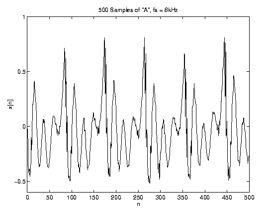
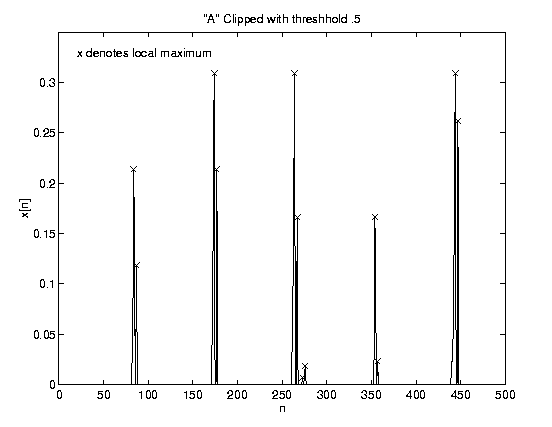
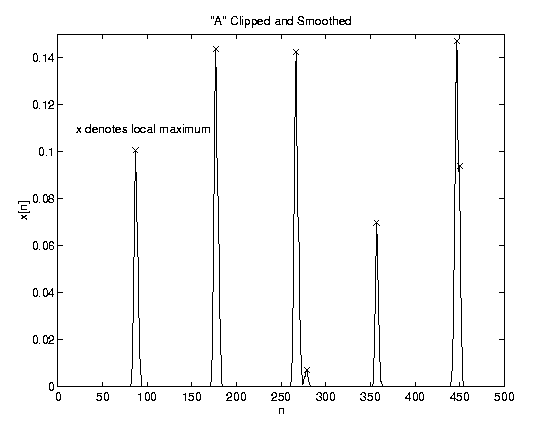

We want to take a complex but periodic oscillation, such as that of a spoken vowel, and determine its fundamental pitch period and fundamental frequency. This involves finding the distance between the most significant maxima of the signal while rejecting the numerous smaller peaks in each cycle.
First, the signal is clipped below a certain threshhold (see tclip.m) before a routine can be called to find the period. We used a simple threshhold of .9 * the maximum over the whole signal, assuming that there were no aberrant spikes. (Any spurient data point with a magnitude greater than 1.11 * the usual dominant peak of a cycle would ruin our measurement.) In the event that a clear threshhold is not evident, a method exists (which we found unneccessary) in which each data point is cubed (cubeclip.m) to accentuate large values and attenuate small values. An odd power is used to preserve the sign of the data. In any case, a threshhold clip is applied after the multiplication and processing proceeds in the same way.
Our routine for finding peaks (peaks.m) simply finds each data point with a value higher than that of its neighbors. We want to smooth the clipped data so that we only find one maximum for each period, by filtering with a mild 7-point weighted moving average to smooth out the spikes.
Function peaks.m returns the index number of every local maximum in the signal, and some post-processing (see findpitch.m) is required to evaluate the period accurately from this data. The number of samples between each local maximum is computed, and those distances which are greater than one standard deviation from the mean distance are thrown out.

From this a final determination of the fundamental pitch is possible. We found best results using 500-1000 samples, and it would be a good idea, if you have enough data, to take more than one pitch reading (window it). Currently this is one of the slowest calculations in our project, due to the slowness of peaks.m. P-Squared-Squared in 1995 used a mex-file to speed things up, but maybe a better algorithm in general could be used.
Out Pitch Determination Main program is findpitch.m